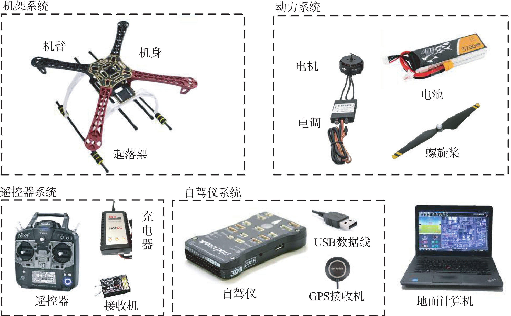
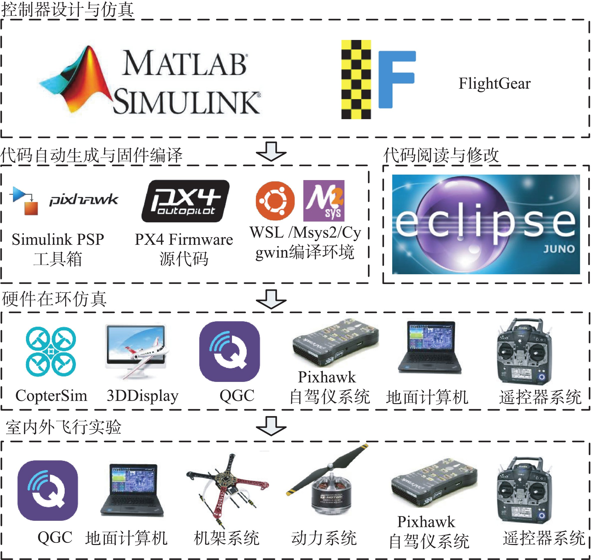

1. 总体介绍¶
1.1. 硬件平台¶
由于控制算法最终将会在真机上进行部署与飞行实验，一套可完成基本飞行任务的硬件平台是必不可少的。本书推荐的硬件平台主要由五个部分组成：
图 1.1 实验硬件平台系统分解图
（1）地面计算机：地面计算机是一台装有操作系统的高性能个人计算机，在本实验平台中主要承担两个方面的作用：①为本书提供的仿真软件包提供软件运行环境，负责控制器设计、软件在环仿真、代码自动生成、硬件在环仿真等功能；②作为实际飞行实验时的地面控制站，承担了对多旋翼自驾仪系统进行传感器校准、参数调整、实时控制与通信等任务。为保证所有软件能够顺畅运行，本书用到的计算机需要满足如下基本配置要求：
- 系统：Windows 7∼10，64 位系统；
- 处理器：英特尔 I5 系列及以上处理器；
- 内存：8G 及以上内存；
- 显卡：独立显卡，2G 及以上显存；
- 硬盘：剩余空间大于 30G，推荐固态硬盘；
- 接口：至少有一个 USB Type A 接口；
- 显示器：分辨率大于等于 1080P。
需要注意的是，为了获取更高的开发效率，计算机的性能应该越强越好。
（2）自驾仪系统（也称为 飞行控制系统 ，或简称为 飞控 ）：作为控制算法的运行平台，自驾仪具有丰富的传感器和强大的计算性能，来获取飞行状态并计算输出动力系统的控制指令，实现多旋翼飞行器的飞行控制。本书选用目前应用广泛的 Pixhawk 系列开源自驾仪系统。其中，Pixhawk 是一个独立的开源硬件项目，致力于为教育、爱好和开发者提供易用、高品质且低成本的自驾仪硬件。针对不同的飞行任务、性能和成本需求，Pixhawk提供了一系列的自驾仪硬件产品，极大地推动了多旋翼飞行器行业的发展。（3）遥控器系统：包含遥控器、接收机、充电器等，用于将地面控制人员(飞控手)的操控指令发给自驾仪以实现多旋翼飞行器的飞行操纵。（4）动力系统：包含电池、螺旋桨、电子调速器(电调)和电机，用于接收自驾仪发送的 PWM(Pulse Width Modulation)控制指令，通过电机和螺旋桨旋转产生拉力与力矩，控制多旋翼的运动。（5）机架系统：包含机身、机臂、起落架等，用于承载负载、动力系统和自驾仪系统，需要优良的气动和结构强度设计来保证飞行任务可靠顺利的完成。
1.2. 软件平台¶
本实验平台依赖众多软件工具来实现控制器设计、代码自动生成、自驾仪代码编译、硬件在环仿真等功能。本书附带的仿真软件包内有一键安装脚本，只需运行安装命令，即可完成所有软件的安装与配置。本书提供的仿真软件包与 MATLAB/Simulink 共同组成了实验软件平台，它整体包含以下几个部分：
（1） MATLAB/Simulink：它是 Mathworks 公司开发的一款可视化仿真工具，可以方便地通过模块化编程语言来搭建仿真系统用于动态系统建模、控制器设计、软/硬件仿真和性能分析等功能，被广泛应用于飞行器和汽车等领域。本书提供的仿真软件包与例程代码支持 MATLAB R2017b 及以上版本，主要依赖的 MATLAB 工具箱包括：
- MATLAB/Simulink
- Control System Toolbox
- Curve Fitting Toolbox
- Aerospace Blockset
- Aerospace Toolbox
- MATLAB Coder
- Simulink Coder
- Stateflow
注解
注意：本书不提供 MATLAB 的安装包与安装流程，请读者自行购买并安装上述工具箱。如果条件允许，推荐安装 MATLAB R2017b 版本，并选择全功能安装(勾选所有工具箱)。
（2） Pixhawk Support Package(PSP)工具箱（https://ww2.mathworks.cn/hardware-support/forms/pixhawk-downloads-conf.html）：Mathworks 公司官方为Pixhawk 自驾仪推出的一个工具箱，用于将 Simulink 中设计的控制算法生成代码并编译下载到 Pixhawk自驾仪硬件。我们在官方工具箱的基础上做了适当的更新与优化，使其能够兼容最新的 Pixhawk 和MATLAB 版本。（3） FlightGear 飞行模拟器（http://home.flightgear.org/）：一款非常受欢迎的开源飞行模拟器软件，可以通过 UDP(User Datagram Protocol)接收 Simulink 发送的飞行状态，方便观测 Simulink 仿真时飞机的飞行状态。（4） PX4 软件源代码（https://github.com/PX4/Firmware）：PX4（https://px4.io/）是一款开源飞行控制软件系统，它运行在 Pixhawk 系列自驾仪硬件平台上，构成了 Pixhawk/PX4 自驾仪软/硬件平台，是目前世界范围内广泛应用的小型无人机自驾仪平台。（5） PX4 Toolchain 固件编译环境：用于将 PX4 源代码和 PSP 工具箱生成的控制器代码编译成“.px4”格式的固件，然后下载并烧录到 Pixhawk 自驾仪硬件中(类似于重装系统的过程)，Pixhawk 自驾仪重新启动后就会自动运行 PSP 工具箱生成的控制算法。（6） Eclipse IDE for C/C++ 集成开发环境（https://www.eclipse.org/downloads/packages/）：用于阅读与修改 PX4 源代码，是一款小巧的 C/C++ 集成开发环境，功能类似于微软的 Visual Studio。（7） QGroundControl(QGC)地面站（http://qgroundcontrol.com/）：用于在多旋翼飞行器起飞前对 Pixhawk 自驾仪进行传感器校准和参数调整等初始化工作，以及在多旋翼飞行器飞行过程中通过无线数传模块接收多旋翼的飞行状态并实时发送控制指令。（8） CopterSim 实时运动仿真软件：CopterSim 是整个RflySim平台的核心，它是针对 Pixhawk/PX4 自驾仪平台开发的一款硬件在环仿真软件，可以在软件中配置多旋翼的模型，通过 USB 串口与 Pixhawk自驾仪连接来实现硬件在环仿真，达到室内模拟室外飞行测试的效果。（9） 3DDisplay 三维可视化视景软件：多旋翼飞行状态三维实时显示软件。它通过 UDP 接收 CopterSim 的飞行数据来实时显示多旋翼的姿态与位置。CopterSim 仿真软件与 3DDisplay 显示软件两者共同构成了硬件在环仿真平台，两者分布式独立运行机制为将来的多机集群仿真提供了兼容性。
1.3. 软/硬关系¶
上文介绍了本实验平台依赖的一些软/硬件组件，这些组件看似种类烦多且复杂，实际上是多旋翼飞行器开发与实际飞行所必须的。对这些工具的熟练使用可以极大地加快开发效率，大大降低开发的难度并节省开发时间。本实验平台的各个软/硬件组件与整体流程的相互关系如下

图 2.2 不同阶段实验平台软/硬件使用情况
它们将会在多旋翼飞行器开发的各个阶段发挥着重要的作用。